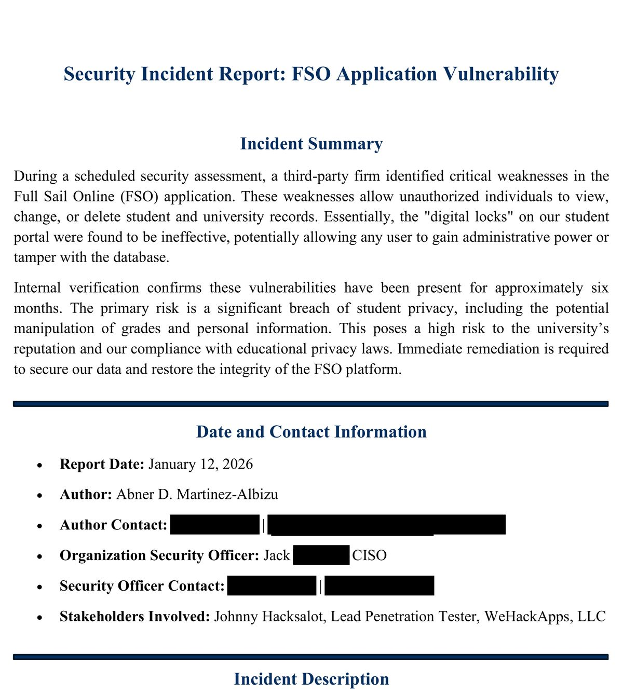

The incident report and BSIMM assessment, redacted
11 pages, both documents in full. The scenario was set by the course. Contact details are removed.
The incident
Critical access-control weaknesses in a student records application: unauthorized viewing, modification and deletion of student records, with a path to privilege escalation. The exposure had gone undetected for roughly six months.
That last detail is the one that changes the character of the report. A flaw found in testing is a defect. A flaw that has been live and unmonitored for half a year is an incident, because the question is no longer "can this be exploited" but "what happened during the window, and can we tell?" Undetected duration is what turns a vulnerability writeup into an incident writeup.

Why the format is the work
The report was written to the structure an organization actually consumes rather than as an essay: report date and author contact, the designated security officer, named stakeholders, an explicit risk statement, and remediation with urgency attached.
Each of those elements exists because of a specific failure mode in how findings get handled:
- Author contact and date — so the report can be followed up on and so the timeline is fixed. A finding with no date cannot be correlated with anything.
- Named stakeholders — because a report addressed to nobody in particular gets actioned by nobody in particular. Records exposure is not solely a security problem; it reaches the registrar, legal and whoever owns the application.
- An explicit risk statement — translating the technical finding into the consequence a decision-maker is actually weighing. "Improper access control on the records endpoint" and "any authenticated user can alter another student's academic record without leaving an audit trail" describe the same defect, and only one of them gets funded.
- Remediation with urgency — a fix with no priority attached competes with everything else in the backlog and loses.
The regulatory dimension mattered here too. Student records sit under FERPA, and the institution's financial operations bring GLBA into scope. Naming which obligations are implicated moves the conversation from engineering judgment to compliance exposure, which is frequently what determines how quickly something gets fixed.
The connection to the rest of my work. Four years in Army personnel operations was largely this: audit against the standard, document what you found, brief it to someone who can act, and write the procedure so it is handled the same way next time.
The subject matter changed. The shape of the work — find it, evidence it, communicate it to a specific person in terms they can act on — did not.
The program behind the incident
A companion assessment used BSIMM to ask why the failure existed at all, rather than what the failure was. Three gaps stood out, and none of them is a bug:
- No written security policies. Without documented expectations there is no standard to hold code to, and every review becomes a matter of individual judgment.
- No developer security training. Access-control logic is written by developers. If nobody has taught them the failure patterns, those patterns recur regardless of how good the security team is at finding them afterward.
- A disconnect between security and development. Findings arrive late, land as criticism, and get triaged against feature work.
The recommendations followed BSIMM activities directly — publishing a documented process, and establishing a security champion inside the development organization rather than relying on an external function to catch everything downstream. That second one addresses the disconnect structurally instead of asking people to communicate better.
This is the layer I find most interesting, and it is why my work sits between operations and governance rather than in one or the other. Patching the finding closes one hole. Establishing why nobody wrote a policy, trained the developers, or noticed for six months is what stops the next one.
What I would do differently
- Include a detection gap analysis. Six months undetected deserves its own section: what logging existed, what it would have taken to catch this, and what to instrument now. That is the most actionable part of the incident and I underweighted it.
- Add an explicit containment and evidence-preservation step ahead of remediation. Fixing first can destroy the record of what happened during the exposure window.
- State notification obligations concretely. Naming FERPA and GLBA is the start; who must be told, by whom, within what window is the part an organization needs on day one.
- Attach measurable follow-up — verification steps and a review date — so the report closes rather than trailing off.
Coursework completed for Software Security, Full Sail University, January–February 2026. The scenario was assigned as part of the course; this was a classroom exercise, not a real incident, and no live system was accessed.